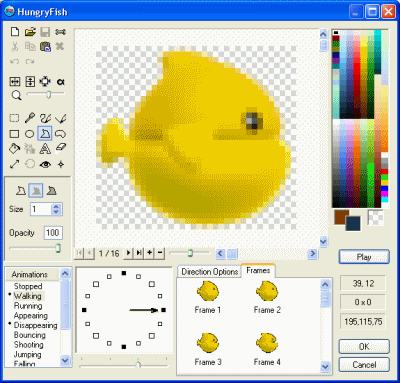
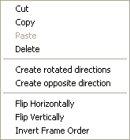
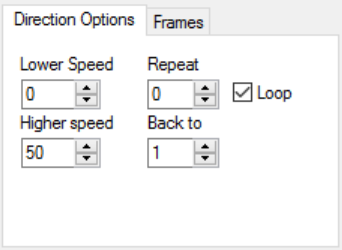
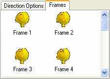
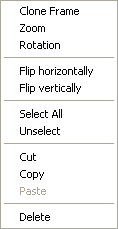
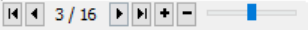

Exporters
Exporters Extensions
Extensions Interface
Interface Chowdren
Chowdren ClickStore
ClickStore Bug Tracker
Bug Tracker| |
This is an archive. |
| See the new ClickWiki at https://clickwiki.net. This version is just an archive for the purposes of migrating content to the new structure. |
Animation Editor
Summary: The animation editor allows you to edit the animation of the Active Object. It allows you to create, modify all the animations contained in this object. The editor is based on the picture editor: please refer to its documentation for information on the paint icons available in the toolbar.
The Animation editor is opened when you edit an Active object. It allows you to draw and define the animations of the object.

As you can see in the picture, the animation editor is an enhanced version of the picture editor. Refer to its documentation for information on the tools and their use. The animation editor is extended in the bottom of the dialog box. From left to right:
{kind=link}
- The animation selector
An active object can have a number of animations, and these animations are used when the object is moving on the screen. The animations consist of default animations and custom animations. The default animations are:- Stopped: used when the object is static
- Walking: used when the object is moving at a slow pace
- Running: used when the object is moving at high speed
- Appearing: if defined, this animation will be played immediately when the object is created
- Disappearing: if defined, this animation will be played when the object is destroyed
- Bouncing: played when the object is bouncing on an obstacle
- Launching: played when the Launch object action is triggered. The bullet is created at the location of the action point of the first image of the animation
- Jumping: used by platform movements, played when the object is jumping
- Falling: used by platform movements, played when the object is falling
- Climbing: used by platform movements, played when the object is climbing a ladder
- Crouch down: used by platform movements, played when the object is crouching
- Stand up: used by platform movements, played when the object is uncrouching
- User animations: you can define an unlimited number of extra animations, for you to use in your application. To create a new animation, click with the right mouse button in the animation selector and choose New.
- The direction selector
The direction selector is located to the right of the animation selector. Each animation can consist of up to 32 different directions. The correct direction will be automatically selected and used by the movement routines used in the runtime, if it exists. If the direction does not exist, the closest existing direction is chosen.
To change the number of directions, use the slider located under the direction selector. It consists of four settings, 4, 8, 16 and 32 directions. 32 directions take a lot of memory and should be reserved for the main objects of your application. Empty directions are marked by an empty square in the direction selector, whereas directions containing images are marked by a filled dot.
If you right click on one of the filled dots, it opens a popup menu:

- Cut / Copy / Paste / Delete: the casual editing functions are available for directions. They copy or paste all the images of the direction at once.
- Create rotated directions. This very powerful option allows you to create all the rotated directions of the animation with just a click. All the directions are computed by rotating the images around the hot-spot.
- Create opposite direction. Creates the opposite direction by flipping the object around the hot-spot of the image.
- Flip Horizontally. Flips horizontally all the images contained in the direction.
- Flip Vertically. Flips vertically all the images contained in the direction.
- Invert Frame Order. Replace the first frame by the last one, the second by the previous etc.
- Direction options tab.
This tab presents important options for the animation.

- Lower speed. Defines the lower speed of the animation. This speed indicates how fast the animation plays when the object is static. The speed is a number from 0 to 100.
- Higher speed. Defines the higher speed of the animation. This speed is the speed used when the object moves at maximum speed. For movements between minimum and maximum speed, the speed of the animation is calculated from the two values.
- Repeat. Indicates how many times the animation should play. Click on the loop checkbox to force the animation to play forever.
- Back to. Indicates the number of the frame at which the animation loops.
- Frame tab
The frame tab shows the different frames of the animation.

A right click on one of the frames opens the following popup menu:

- Clone frame. Creates a new frame using the current frame as a template.
- Zoom. Opens the zoom dialog box, allowing you to create new frames by zooming in or out the current frame. The new frames can be inserted before or after the current frame.
- Rotation. Creates new frames by rotating the object around its hot-spot. Here too, the new frames can be inserted before or after the current frame.
- Flip horizontally. Flips the selected frames horizontally.
- Flip vertically. Flips the selected frames vertically.
- Select all. Selects all the frames of the animation.
- Unselect. Unselects the selected frames of the animation.
- Cut / Copy / Paste. The casual editing functions work on frames too.
- Delete. Deletes the selected frames.
- The control bar.
The control bar is displayed under the magnified frame. It allows you to quickly navigate through the different frames of the animation.

From left to right:
- First frame. Displays the first frame of the animation.
- Previous frame. Displays the previous frame of the animation.
- Frame Number. Indicates the number of the frame and the total number of frames contained in the animation.
- Next frame. Displays the next frame of the animation.
- Last frame. Displays the last frame of the animation.
- Clone frame. Creates a new frame by duplicating the current one. The new frame is inserted after the current frame.
- Delete frame. Destroys the current frame.
- Display previous or next frame. This powerful option transforms the animation editor into a light table: it allows to display the previous or next frame in semi-transparency above the current frame. Very useful to create animation: you can copy the previous image and create the new one from it. Moving the cursor to the left displays the previous frame, and to the right the next frame.
{kind=link}
{kind=link}
{kind=link}
{kind=link}
{kind=link}